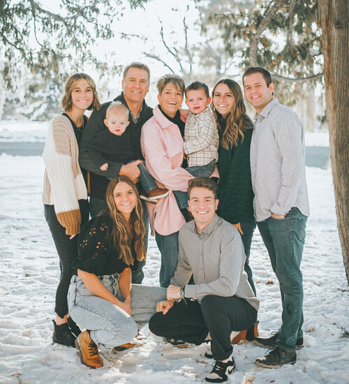

About Dr. Thornton

Dr. Justin Thornton was raised in Lima, Montana. While attending college in Idaho, he married his wife, Janet Jenson. They moved to Virginia where he attended dental school at Virginia Commonwealth University. Upon graduating in 1996, he was accepted into the 2-year endodontic residency program at the VCU School of Dentistry. While completing the residency program, he was trained in the latest endodontic techniques including the use of the surgical operating microscope which he uses to complete all treatments. Upon graduating in 1998, he and his wife moved to Cache Valley where he opened up a practice limited to endodontics near the hospital. Together they are the parents of 4 children and 2 grandchildren. Justin enjoys spending time in Montana, golfing, and attending Utah State Aggie games.